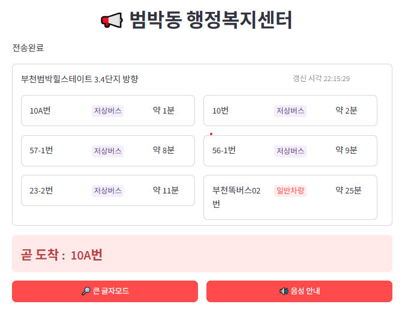

PYTHON · ARDUINO · 공공데이터
스마트 버스 정류소 안내 시스템

프로젝트 소개
공공데이터 API와 아두이노를 연동한 버스 도착 안내 프로젝트입니다. 큰 글자 모드와 저상버스 구분 표시를 적용하여, 교통약자를 비롯한 다양한 이용자가 버스 정보를 쉽게 확인할 수 있도록 구성했습니다.
주요 기능
01실시간 도착 정보 · TAGO API에서 버스 정보를 30초마다 조회하여 노선별 도착 예정 시간과 차량 유형을 표시합니다.
02도착 임박 안내 · 도착까지 1분 이하로 남은 버스를 별도 영역에 강조합니다.
03큰 글자 모드 · 버튼을 누르면 글자 크기와 화면 배치를 변경하여 정보를 크게 보여줍니다.
04저상버스 구분 · 차량 유형을 색상과 텍스트로 표시하여 저상버스 여부를 쉽게 확인하도록 했습니다.
데이터 처리 및 기기 연동
동일 노선의 여러 버스 중 가장 먼저 도착하는 차량을 선택하고, 도착 예정 시간이 짧은 순서로 정렬합니다.
이 중 상위 2대의 노선번호, 도착까지 남은 시간, 남은 정류장 수를 JSON으로 구성하여 USB 시리얼 통신으로 아두이노에 전송합니다.
아두이노 연동 및 LCD 출력
01데이터 수신 · 줄바꿈 문자를 기준으로 JSON 데이터를 수신하고, 노선번호·도착예정시간·남은 정류장 수를 추출합니다.
02도착 시간 변환 · 초 단위 도착 시간을 분 단위로 올림 처리하여 표시합니다.
03LCD 안내 · Python에서 전송한 최대 2대의 버스 정보를 LCD의 각 행에 출력합니다.
04화면 갱신 · 새로운 데이터를 수신하면 기존 화면을 지우고 최신 정보로 교체합니다.
05오류 확인 · JSON 해석에 실패하면 시리얼로 오류 메시지를 출력합니다.
사용 기술
Python, Streamlit, Pandas, Requests, TAGO OpenAPI, PySerial, Arduino
구현 포인트
공공데이터 조회부터 데이터 가공, 웹 화면 표시, 하드웨어 전송까지 하나의 흐름으로 연결했습니다.
Streamlit의 주기적 갱신 기능과 세션 상태를 활용하여 도착 정보를 업데이트하고 글자 모드를 전환하도록 구현했습니다.